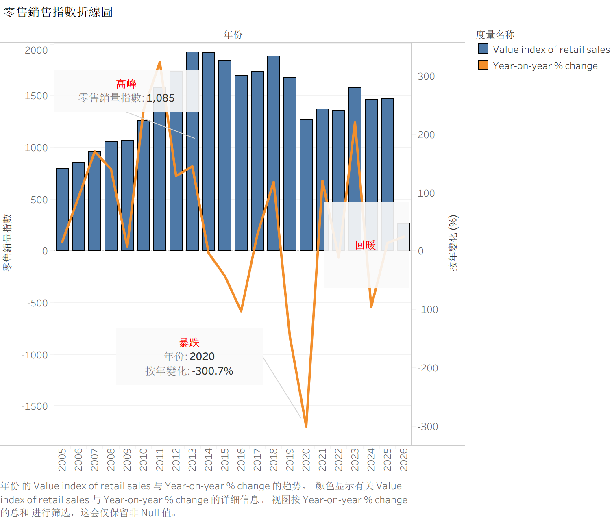
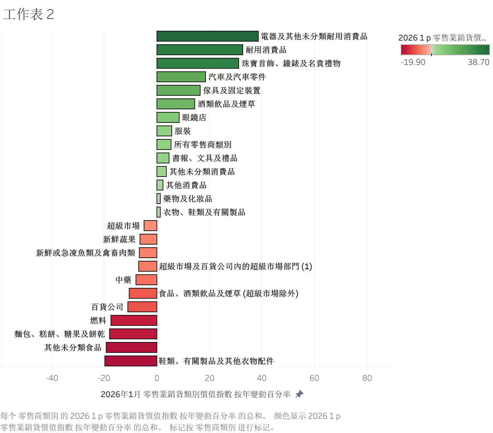

政府統計處最新數據顯示，香港2026年1月零售業總銷貨價值達373億元，按年升5.5%，表面上延續回暖勢頭。但街頭另一邊，店舖結業、核心區空置和傳統品類疲弱仍然持續，說明這場復甦更像是品類分化下的結構性反彈，而非全面復蘇。
表面回升，內裡分化
香港零售市道再現回暖訊號。政府統計處最新數字顯示，2026年1月零售業總銷貨價值達373億元，按年上升5.5%，延續去年以來的復甦勢頭。
不過，表面回升之下，零售業的結構性壓力仍然明顯。2025年零售總額僅錄得約1%反彈，而2020年曾大跌24.3%，顯示疫情帶來的衝擊至今仍未完全消化。
品類分化：贏家和輸家

2026年1月各产品类别销售新增长形成分化。电器及其他未分类耐用消费品领涨，按年增38.7%；珠宝首饰增31.1%；而传统经营类别走势相反，鞋类按年下跌19.9%，燃料下跌17.5%。
複甦不平均，品類強弱懸殊
從品類表現來看，復甦並不平均。電器及其他未分類耐用消費品按年急升38.7%，珠寶首飾、鐘錶及名貴禮物升31.1%，汽車及汽車零件升18.5%，傢具及固定裝置亦升16.4%。這些板塊明顯跑贏大市，反映部分高單價或旅客相關消費已出現回流。
與此同時，另一批傳統零售品類仍然受壓。鞋類、有關製品及其他衣物配件按年下跌19.9%，燃料跌17.5%，百貨公司貨品跌11.1%。數據顯示，零售回暖並非全面擴散，而是集中在少數板塊。
網上銷售崛起，線下仍承壓
網上銷售同樣維持增長。2026年1月網上銷售按年上升25.1%，但佔總零售額仍只有8%。這意味電子商貿雖然增長迅速，短期內仍未足以完全抵消線下門店承受的壓力。
長期波動：從高峰到恢復

香港零售销售指数20年波动。2013年创历史高峰1,085，疫情对2020年造成300.7%的跌幅冲击，经历近五年恢复，2026年1月回升至相对稳定区间。
街頭現實 vs 統計數字
在街頭層面，零售復甦的體感亦未與統計數字同步。2025至2026年間實體店舖倒閉數量及四大核心區街舖空置率均呈上升趨勢，反映租舖需求和經營環境仍未全面改善。
結論：「結構性復甦」而非全面回暖
整體而言，香港零售業正在回升，但更像是一場「結構性復甦」：部分品類受惠明顯，部分傳統門店仍然疲弱，總量增長未能完全反映街頭現實。這提示投資者和政策制定者，單看總量指標可能過於樂觀，需要深入觀察品類、渠道和地區層面的細節。